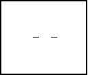
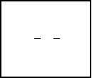

| HOME >> Tutorials >> Tutorial 14: Pixels |
Introduction:
This tutorial is going to be very similar to the previous one. Pixels and points are almost exactly the same; they differ in three ways. The point commands use the coordinate system (x,y), while the pixel commands use the row,column method. Because the pixel commands use the row,column method, you do not have to set the window variables, which is why I prefer to use the pixel commands over the point commands when I'm combining them with text. However, when I want to use lines and circles, I generally use the point commands. The second way that the pixel commands differ from the point commands is that the pixel commands have a set boundary, just like Text(. The boundaries are very similar to those of Text( except that the pixels can go down as far as row 62, while text stopped at row 57. The final way that these two sets of commands are different is that the pixel commands don't have marks like the point commands do. A pixel is just one little dot.
New Commands:
| Pxl-On( | Draws a pixel at (row,column) |
| Pxl-Off( | Erases the pixel at (row,column) |
| Pxl-Change( | Reverses or toggles the pixel at (row,column) |
| pxl-Test( | Returns a 1 if pixel is on, and a 0 if pixel is off |
| Pxl-On(row,column) | Pxl-Off(row,column) |
| Pxl-Change(row,column) | pxl-Test(row,column) |
The Codes:
I'll be pretty much using the same codes as I did in the previous tutorial on points because they are pretty much the same. The first code will be making a line using Pxl-On(, and then erasing it using Pxl-Off(, the second code will use Pxl-Change(, just as I used Pt-Change( in the last tutorials, and then final code will show the use of pxl-Test(.
| : | For AShell, SOS, and TI-Explorer |
| AxesOff | Turns the graph axes off |
| FnOff | Deselects all the Y= functions |
| ClrDraw | Clears the graph screen of all drawings |
| For(X,37,57 | Draws a horizontal line that is 20 pixels long |
| Pxl-On(31,X | in about the middle of the screen |
| End | End the For loop |
| Pause | Suspends program and waits for user to press |
| For(X,42,52 | |
| Pxl-Off(31,X | Erases 10 pixels of the horizontal line/font> |
| End | End the For loop |
press  

All this program does is draw a line, wait for the user to press  , and then erases the middle half of it. It's fairly simple. I didn't show the example of underlining text because I wanted to combine, Pxl-On( and Pxl-Off( in one code. To underline text, just use the same code as the one in the previous tutorial except you change Pt-On( to Pxl-On(. Also, make sure you change the numbers that were in the coordinate system (x,y) to numbers in the row,column method. Once again you can use the command Line( to do both operations in this code. Next, using Pxl-Change(.
, and then erases the middle half of it. It's fairly simple. I didn't show the example of underlining text because I wanted to combine, Pxl-On( and Pxl-Off( in one code. To underline text, just use the same code as the one in the previous tutorial except you change Pt-On( to Pxl-On(. Also, make sure you change the numbers that were in the coordinate system (x,y) to numbers in the row,column method. Once again you can use the command Line( to do both operations in this code. Next, using Pxl-Change(.
| : | For AShell, SOS, and TI-Explorer |
| AxesOff | Turns the graph axes off |
| FnOff | Deselects all the Y= functions |
| ClrDraw | Clears the graph screen of all drawings |
| Pxl-On(31,5 | Draws a pixel at row 31 and column 5 |
| Pxl-On(31,65 | Draws a pixel at row 31 and column 65 |
| Lbl 1 | |
| Pxl-Change(31,35 | Toggles a pixel at row 31 and column 35 |
| Pxl-Change(31,5 | Toggles the pixel at row 31 and column 5 |
| Pxl-Change(31,65 | Toggles a pixel at (65,-31) |
| For(X,1,100) | This line and the next line are used to |
| End | delay the program for about a second |
| Goto 1 | Goto Label 1 |
Repeatedly...
 and
and 
This does exactly the same thing as the code in the previous tutorial, but it's a good example to show how Pxl-Change( works. The next code is something you haven't seen yet and it's on the use of pxl-Test(.
| : | For AShell, SOS, and TI-Explorer |
| AxesOff | Turns the graph axes off |
| FnOff | Deselects all the Y= functions |
| ClrDraw | Clears the graph screen of all drawings |
| Lbl 1 | |
| Pxl-Change(31,47 | Toggles a pixel at row 31 and column 47 |
| If pxl-Test(31,47)=1 | If the pixel is on at row 31 and column 47, then |
| Text(50,25,"THE PIXEL IS ON | Displays text "THE PIXEL IS ON " (four spaces) |
| If pxl-Test(31,47)=0 | If the pixel is on at row 31 and column 47, then |
| Text(50,25,"THE PIXEL IS OFF | Displays text "THE PIXEL IS OFF " |
| For(X,1,100) | This line and the next line are used to |
| End | delay the program for about a second |
| Goto 1 | Goto Label 1 |
Repeatedly...
and
All this program does is when the pixel is toggled on by Pxl-Change(, it displays "THE PIXEL IS ON." When Pxl-Change( toggles the pixel off, then the program displays "THE PIXEL IS OFF". The reason why you have to add those extra four spaces at the end is that when the pixel is initially toggle on, then off, then back on again, the text will read "THE PIXEL IS ONF". This is because "OFF" is longer than "ON". The reason it had to be fours spaces instead of one like it'd be on the home screen is because a space on the graph screen is only one pixel. On the home screen, a space is equivalent to a letter, but on the graph screen a space is just one pixel. I hope I've explained that well enough. I could have combined the If statements and the command line below them with a ":" (colon), but I didn't because I didn't have enough space. When I tested the program on my calculator, I did join the lines with a colon, but the way I have it above, will work also. Also, I didn't use an If-Then-Else construction because I have found out that the program runs faster with lots of If statements. I found that it's better to use two If statements than one If-Then-Else statement. In addition, to make the program run faster, I didn't store the answer to the pxl-Test( into a variable. I could have stored the answer to pxl-Test( in "X" and then changed the If statements to read "If X=1..." The way above not only saves bytes, but also makes the program run faster because it doesn't have to store a variable and then recall the value of it. I just put the For loop at the end so you'll be able to read the text.
Version 3.0 Update:
The code below does exactly the same thing as the last code in the previous tutorial. This code, once again, shows you how to "highlight" text to make it stand out. The only difference is that it uses Pxl-Change(, instead of Pt-Change(. Also, it highlights a little bit differently, but the end result is still the same. Here's the code:
| : | For AShell, SOS, and TI-Explorer |
| AxesOff | Turns the graph axes off |
| FnOff | Deselects all the Y= functions |
| ClrDraw | Clears the graph screen of all drawings |
| Text(29,23,"HIGHLIGHTED!! | Writes "HIGHLIGHTED!!" in the middle of the screen |
| For(Y,29,35 | |
| For(X,22,70 | |
| Pxl-Change(Y,X | Toggles all the pixels in a rectangle around the text |
| End | |
| End |

Did you see the slight difference? In the previous tutorial, the text was shaded from left to right. However, in this code, the text was shaded from top to bottom. In order for this to happen, you had to put the "Y" For loop first and the "X" For loop second. Whichever way you want the text to be highlighted, that is which For loop you put first. The reason it is "Pxl-Change(Y,X" and not "Pxl-Change(X,Y" like it was in the last tutorial is because of Pxl-Change(row,column). row is actually the Y variable and column is the X. I wanted to show you both ways so that you could pick which one you like best.
Conclusion:
That concludes this lesson. I hope after reading this lesson and the previous lesson that you understand how to make points and pixels. Knowing how to use these seven commands will help in making pictures of actual objects. In the next tutorial, I'll finally show you how you use the Line( command. Using this command is a lot easier than putting pixels or points in a For loop.
If you do not understand a particular part in this lesson, have suggestions, or find any problems please contact me.
 |
 |
| Tutorial 13 | Tutorial 15 |